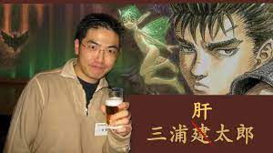

Kentaro Miura
Kentarō Miura (三浦 建太郎, Miura Kentarō?), né le 11 juillet 1966 à Chiba(Japon) et mort le 6 mai 2021 [Où ?], est un dessinateur et scénariste japonais
de mangas. Il est notamment connu pour être l'auteur de la série médiévale-fantastique Berserk.
Il a également collaboré avec le scénariste Buronson pour créer les trois mangas
Oh-roh (王狼, Ō-rō?, litt. « Le roi des loups »),Oh-roh-Den (王狼伝, Ō-rō den?) et Japan
(ジャパン?). L'auteur travaille en 2013 sur un one shot en sept chapitres, Gigantomachia,
publié dans le magazine Young Animal1,2. Il est également à l'origine du character design
de la mascotte du logiciel de synthèse vocale Gakupo Kamui3.
Series
- 1976 : Miuranger.
- 1977 : Ken e no Michi (剣への道?, litt. « Le chemin de l'épée »).
- 1989–2021 : Berserk (ベルセルク, Beruseruku?). Publié dans le Monthly Animal House (1989–1992) puis dans le Young Animal (1992–2021) de Hakusensha.
- 2019–2021 : Duranki22. Publié dans le Young Animal Zero de Hakusensha
Récompenses
- 1988 : Prix Comi Manga avec son prototype de Berserk (ベルセルク, Beruseruku?)
- 2002 : Prix d'excellence du Prix culturel Osamu Tezuka.
- 1985 : Futatabi (再び?, litt. « Une fois de plus »), one shot déposé pour son admission à l'université Nihon. Publié dans le Weekly Shōnen Magazine de Kōdansha.
- 1985 : NOA, one shot. Publié dans le Fresh Magazine de Kōdansha.
- 1988 : Berserk Prototype, one shot ayant servi d'introduction à la série Berserk (ベルセルク, Beruseruku?). Publié dans le Monthly ComiComi de Hakusensha.
- 1989 : Oh-roh (王狼, Ō-rō?, litt. « Le roi des loups »), one shot. Publié dans le Monthly Animal House de Hakusensha.
- 1990 : Oh-roh-Den (王狼伝, Ō-rō den?), one shot. Publié dans le Monthly Animal House de Hakusensha.
- 1992 : Japan (ジャパン?), one shot. Publié dans le Young Animal de Hakusensha.
- 2013 : Gigantomachia (ギガントマキア, Gigantomakhia?), one shot. Publié dans le Young Animal de Hakusensha.
One shotes